Überblick und Rollen
ClubTouch läuft im Browser: auf dem Tablet an der Theke, auf dem Handy und am Laptop. Es gibt nichts zu installieren.
Links oben öffnet das Menü ☰ alle Bereiche. Auf jeder Seite außer dem Verkauf führt der rote Knopf Verkauf öffnen mit einem Tipp zurück an die Kasse.
Ein Tag an der Theke endet nicht um Mitternacht: Der Geschäftstag beginnt um 06:00 Uhr. Was um 01:30 Uhr gebucht wird, gehört noch zum Abend davor – in der Tagesübersicht, im Tagesabschluss und im Clubscore.
Wer darf was?
Es gibt drei Rollen. Was eine Rolle nicht darf, wird im Menü gar nicht erst angezeigt.
| Bereich | Admin | Kassierer | Buchhaltung |
|---|---|---|---|
| Verkaufen, „Auf den Wirt“, Verkäufe stornieren | ja | ja | – |
| Kunden anlegen, Guthaben aufladen | ja | ja | nur lesen |
| Artikel anlegen und ändern | ja | ja | nur lesen |
| Einkauf erfassen, Belege hochladen | ja | ja | nur lesen |
| Einkauf als bezahlt markieren | ja | ja | ja |
| Einkaufsbelege löschen | ja | – | ja |
| Kundenrechnungen schreiben | ja | ja | lesen + PDF |
| Kasse zählen, Kassenbewegung buchen | ja | ja | ja |
| Anfangsstände, Kontostand abgleichen, Kassenbewegung stornieren | ja | – | ja |
| Geschäftsjahr anlegen und abschließen | ja | – | ja |
| Berichte: Monatsbericht, Kundenliste, Einnahmen & Ausgaben | ja | – | ja |
| Clubscore-Ziele, Werbung | ja | ja | – |
| Benutzer verwalten | ja | – | – |
Anmelden
Die Adresse der Kasse im Browser öffnen und mit E-Mail oder Benutzername und Passwort anmelden. Groß- und Kleinschreibung spielt beim Namen keine Rolle.
- Das Tablet an der Theke bleibt angemeldet, auch über Nacht und nach einem Neuladen.
- Nach zehn falschen Versuchen ist die Anmeldung für 15 Minuten gesperrt.
- Das eigene Passwort ändert man über das runde Symbol oben rechts → Passwort ändern.
- Der Mond daneben schaltet zwischen dunkler und heller Ansicht um.
Verkaufen
Drei Spalten: links wer zahlt, in der Mitte die Getränke, rechts der Warenkorb.

Getränke wählen
- Kachel antippen: eine Flasche mehr im Warenkorb. Die grüne Zahl auf der Kachel zeigt, wie viele schon drin sind.
- Kachel lange drücken: Menge direkt eingeben.
- Oben nach Kategorie filtern (Bier, Alkoholfrei, Wein & Spritzer, Alles) oder suchen.
- Im Warenkorb mit + und − ändern, mit dem Papierkorb entfernen. Auf dem Tablet reicht ein Wisch nach links. Wer sich dabei vertut, bekommt 5 Sekunden „RÜCKGÄNGIG“.
Wer zahlt?
- Bar Der Gast zahlt bar. Das Feld „Wechselgeld“ rechnet das Rückgeld aus.
- Karte Erst am SumUp-Gerät kassieren, dann in der Kasse bestätigen. Die Kasse steuert das Kartengerät nicht.
- Auf den Wirt Eigenverbrauch der Thekenkraft. Kostet nichts, der Bestand sinkt trotzdem.
- Kundenkonto: Namen in der Liste antippen. Oben steht „Heute an der Theke“ mit allen, die heute schon etwas hatten, darunter alle Kunden nach Alphabet. Die Suche findet auch Spitznamen.
Buchen
Der große Knopf zeigt, was passieren wird:
- Buchen: Anna Das Guthaben reicht.
- Überziehen: Anna Das Guthaben reicht nicht. Nach einer Rückfrage wird angeschrieben.
- Limit überschritten: Das Konto würde unter −10 € fallen. Das geht nicht – erst aufladen oder bar kassieren.
Nach der Buchung erscheint unten 5 Sekunden lang RÜCKGÄNGIG. Ein Tipp darauf storniert den Verkauf und legt Warenkorb und Kunde wieder hin.
Auf dem Handy
Die Getränke bleiben sichtbar, die Leiste unten übernimmt den Rest: „Wer zahlt?“, der Warenkorb mit Anzahl und Summe und der Buchen-Knopf.
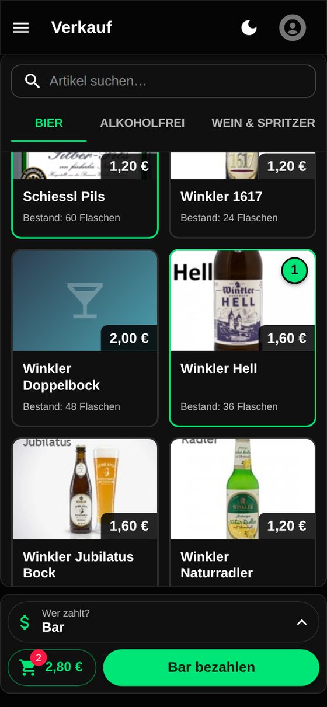
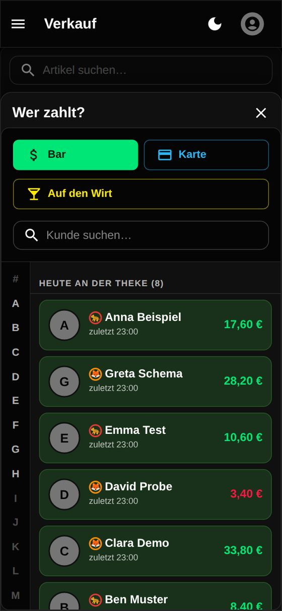
Kunden und Guthaben
Menü → Verwaltung → Kunden
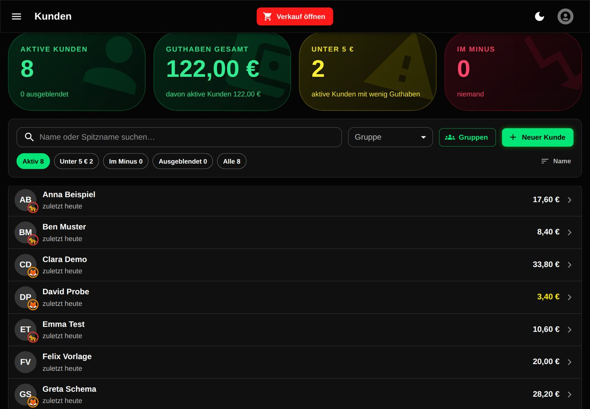
Neuen Kunden anlegen
Neuer Kunde antippen, Namen eintragen, speichern. Jeden Namen gibt es nur einmal. Spitzname, Gruppe und Kontaktdaten sind freiwillig.
Guthaben aufladen
- Kunden antippen (im Verkauf oder auf der Kundenseite), dann Aufladen.
- Betrag wählen oder eintippen. Komma ist erlaubt: 12,50.
- Zahlungsart wählen: Bar (Geld kommt in die Kasse), Karte (SumUp) oder Überweisung (Geld ist auf dem Konto eingegangen).
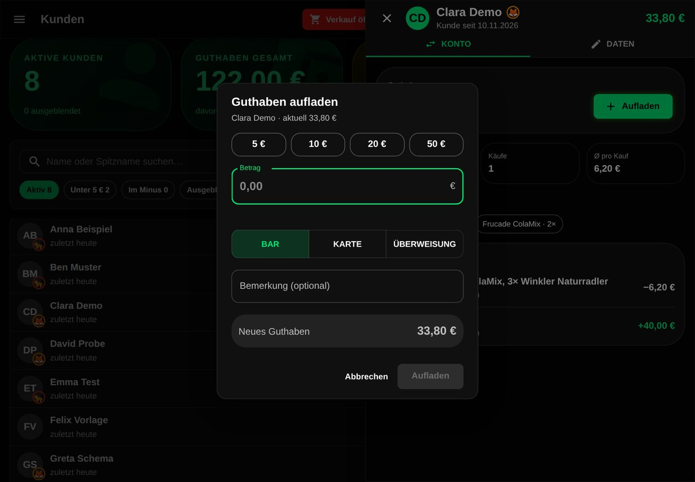
Verlauf und Kontoauszug
Im Kunden-Panel steht jede Buchung. Den Kontoauszug als PDF gibt es unter Berichte → Kontoauszug. Er beginnt mit dem Anfangssaldo und endet mit dem aktuellen Guthaben.
Gruppen
Über Gruppen lassen sich Teams anlegen (Farbe, Emoji oder Bild). Sie erscheinen als Abzeichen am Namen und treten im Clubscore gegeneinander an. Ein Kunde gehört zu höchstens einer Gruppe.
Ausblenden statt löschen
Wer lange nicht da war, wird ausgeblendet und stört im Verkauf nicht mehr. Über den Filter „Ausgeblendet“ ist er jederzeit wieder da, das Guthaben bleibt.
Guthaben selbst abfragen
Auf der Seite /check-balance kann jeder Gast ohne Anmeldung seinen Stand sehen: Namen und den gemeinsamen PIN eingeben. Nach zehn Fehlversuchen ist für 15 Minuten Pause.
Ohne Netz arbeiten
Fällt das WLAN aus, läuft die Theke weiter.
- Verkäufe und Aufladungen werden auf dem Gerät gespeichert. Oben erscheint ein Zähler mit den wartenden Buchungen.
- Sobald das Netz zurück ist, werden sie der Reihe nach übertragen. Jede Buchung kommt genau einmal an, auch wenn die Verbindung mittendrin abreißt.
- Die Seite neu laden oder das Tablet sperren ist kein Problem.
- Artikel, Preise und Kundenliste stehen auch ohne Netz bereit – mit dem Stand vom letzten Laden.
Neue Kunden, Einkauf, Kasse zählen und Berichte brauchen Netz.
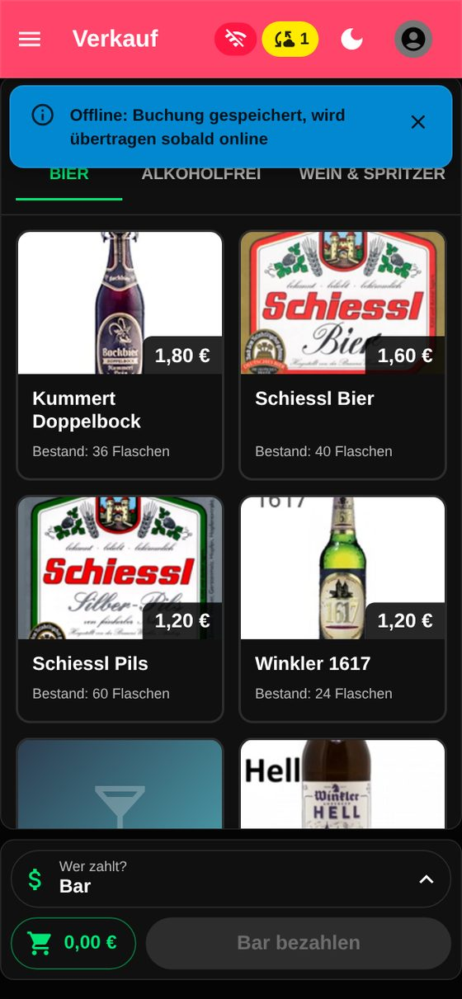
Stornieren
Menü → Finanzen → Transaktionen
Jede Buchung des Tages steht hier, gruppiert nach Geschäftstag. Zeile antippen öffnet die Details, dort gibt es Stornieren.
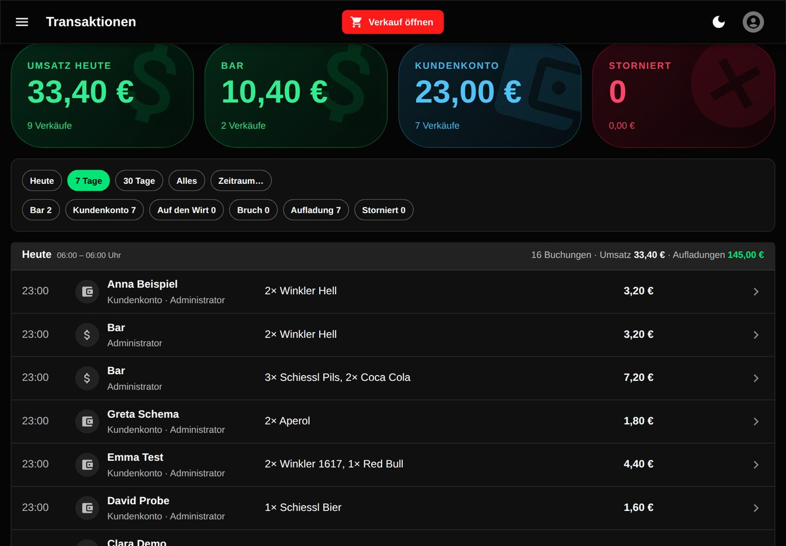
- Ein Storno löscht nichts. Es entsteht eine Gegenbuchung: Geld bzw. Guthaben geht zurück, die Flaschen kommen wieder in den Bestand.
- Jede Buchung lässt sich genau einmal stornieren. Ein Storno selbst kann nicht storniert werden – dann neu buchen.
- Bei Barverkäufen muss das Geld auch wirklich aus der Kasse zurück an den Gast.
Artikel und Bestand
Menü → Verwaltung → Artikel
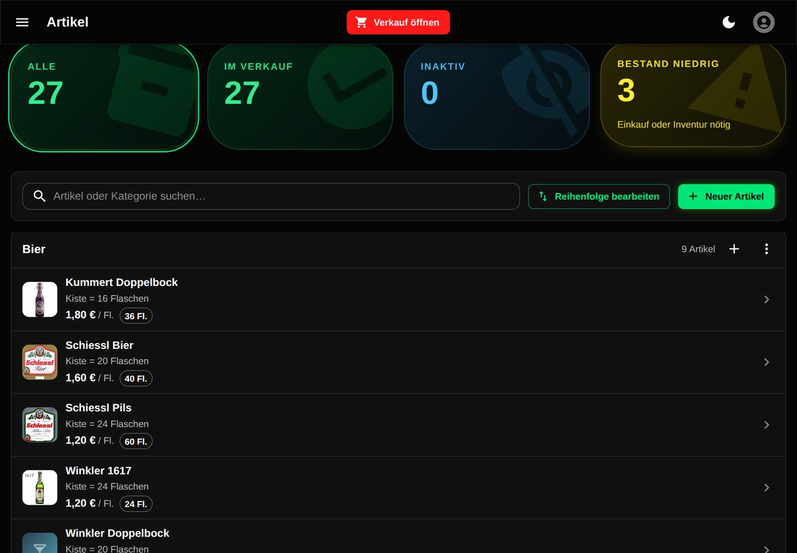
- Neuer Artikel: Name, Preis, Kategorie, Einheit (Flasche) und wie viele Flaschen in einer Kiste sind. Ein Foto vom Etikett macht die Kachel im Verkauf leichter zu finden.
- „Zählt für den Clubscore“ legt fest, ob Verkäufe dieses Artikels in die Rangliste eingehen.
- Mindestbestand: Fällt der Bestand darunter, warnt das Dashboard.
- Abgelaufen / Bruch: Flaschen, die weggeschüttet werden, hier ausbuchen. Das kostet niemanden etwas, hält aber den Bestand ehrlich.
- Artikel, die es nicht mehr gibt, deaktivieren statt löschen. Alte Buchungen bleiben lesbar.
Einkauf
Menü → Finanzen → Einkauf – alles, was reinkommt: Ware und Rechnungen.
Es gibt zwei Belegarten:
- Lieferschein: Die Ware ist da. Bucht Flaschen in den Bestand, kostet noch nichts.
- Lieferantenrechnung: Das kostet Geld. Sie zählt als Ausgabe, sobald sie bezahlt ist.
Kommt die Rechnung später als die Ware, werden die Lieferscheine der Rechnung zugeordnet. Die Rechnung selbst braucht dann keine eigenen Positionen mehr.
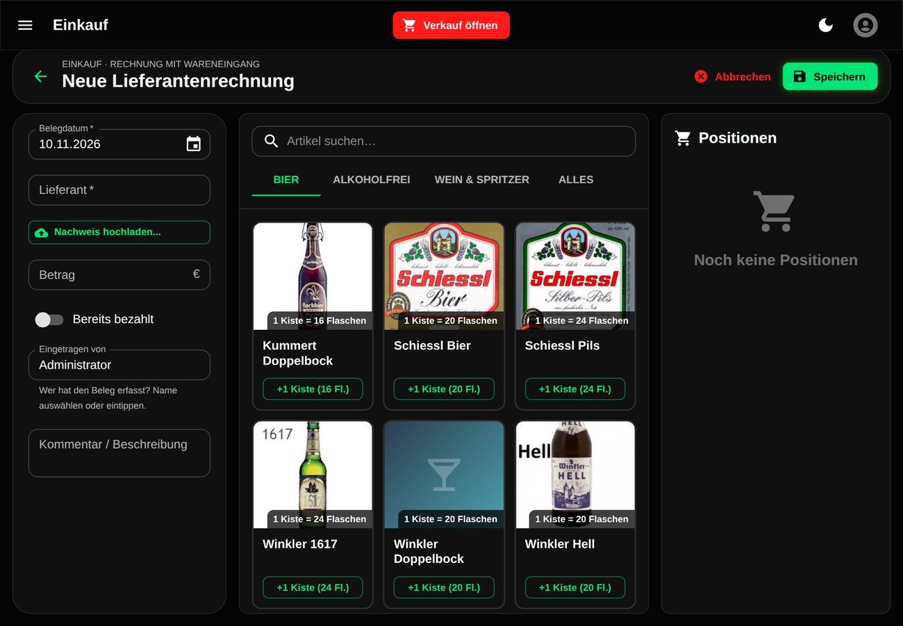
So wird ein Beleg erfasst
- Belegdatum und Lieferant eintragen.
- Nachweis hochladen: Foto oder PDF des Belegs (JPEG, PNG oder PDF). Die Kassenprüfung braucht ihn am Jahresende.
- Artikel antippen: gerechnet wird in Kisten und einzelnen Flaschen, die App rechnet um.
- Bei Rechnungen den Betrag eintragen. Ist sie schon bezahlt: Schalter „Bereits bezahlt“, Zahlungsart und „Bezahlt am“.
- „Eingetragen von“ – der eigene Name. Wichtig am gemeinsamen Thekentablet.
Kundenrechnungen
Menü → Finanzen → Kundenrechnungen – wenn jemand eine Rechnung braucht, etwa für eine Feier.
- Empfänger wählen (ein Kunde aus der Liste füllt Name und Anschrift vor) oder frei eintragen.
- Artikel antippen oder freie Positionen schreiben, der Preis ist hier änderbar.
- Speichern bucht die Ware aus dem Bestand. Die Rechnungsnummer vergibt die App fortlaufend.
- Das PDF trägt Logo, Absender, Kontoinhaber, IBAN und einen QR-Code für die Banking-App.
Der Status
| Status | Bedeutung |
|---|---|
| Entwurf | Noch änderbar. |
| Versendet | Beim Kunden, noch offen. |
| Bezahlt | Geld ist da. Zahlungsart (bar oder Überweisung) und Datum angeben – erst jetzt zählt sie als Einnahme. |
| Storniert | Die Ware kommt zurück in den Bestand. Storniert bleibt storniert. |
Absender und Bankverbindung stehen unter „Einstellungen“ auf dieser Seite (nur Admin).
Kasse und Bank
Menü → Finanzen → Kasse & Bank
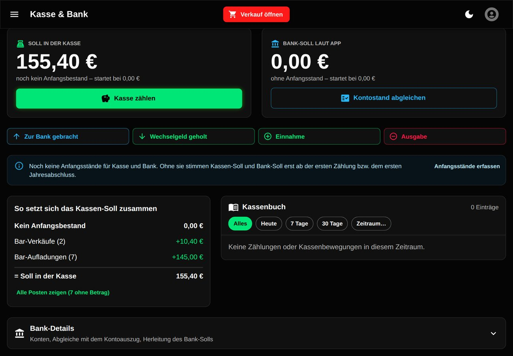
Kasse zählen
Die Kasse muss nicht täglich gezählt werden – jederzeit geht. Kasse zählen öffnet das Zählbrett: Stückzahl je Schein und Münze eintragen, die Summe rechnet die App.
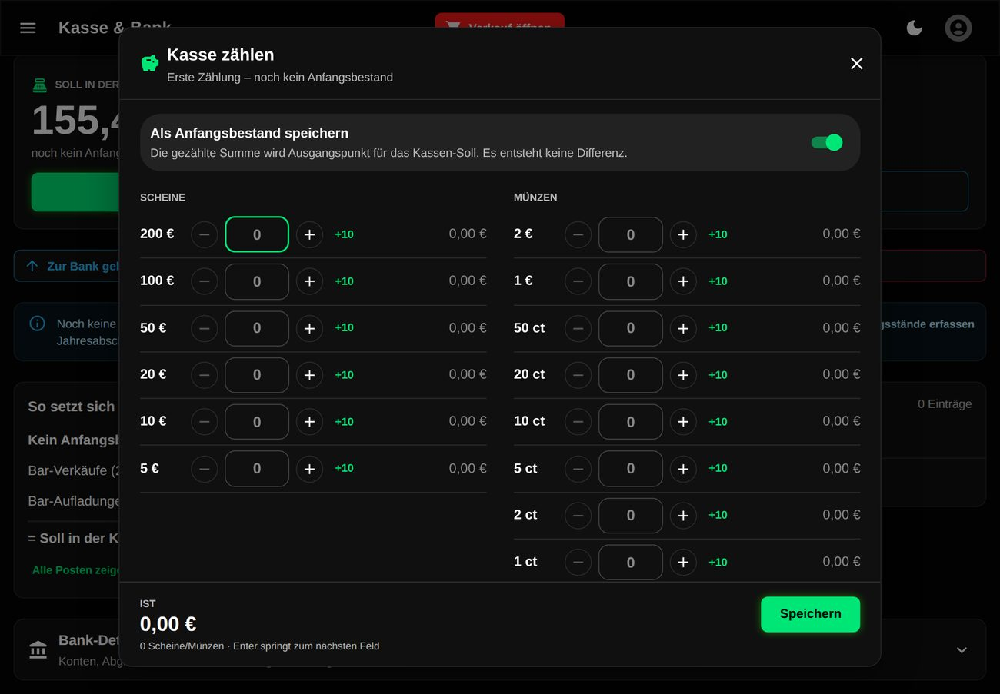
Nach dem Speichern steht da, was drin sein müsste (Soll), was gezählt wurde (Ist) und die Differenz. Das Soll ergibt sich so:
- letzte Zählung
- + Barverkäufe, + bar aufgeladenes Guthaben, + bar bezahlte Kundenrechnungen
- − bar bezahlte Lieferantenrechnungen, − Stornos
- ± Kassenbewegungen (siehe unten)
Geld rein, Geld raus
| Knopf | Wann |
|---|---|
| Zur Bank gebracht | Bargeld aus der Kasse aufs Konto eingezahlt. |
| Wechselgeld geholt | Geld vom Konto in die Kasse gelegt. |
| Einnahme | Bargeld ohne Verkauf, z. B. eine Spende. Bemerkung ist Pflicht. |
| Ausgabe | Bargeld ohne Beleg im Einkauf, z. B. Pfand. Bemerkung ist Pflicht. |
Bank
Die App führt kein Bankkonto, sie rechnet nur mit: Überweisungen, Kartenzahlungen (abzüglich geschätzter SumUp-Gebühr) und Einzahlungen. Über Kontostand abgleichen den Stand vom Kontoauszug eintragen – die App zeigt die Differenz.
Berichte
Menü → Finanzen → Berichte
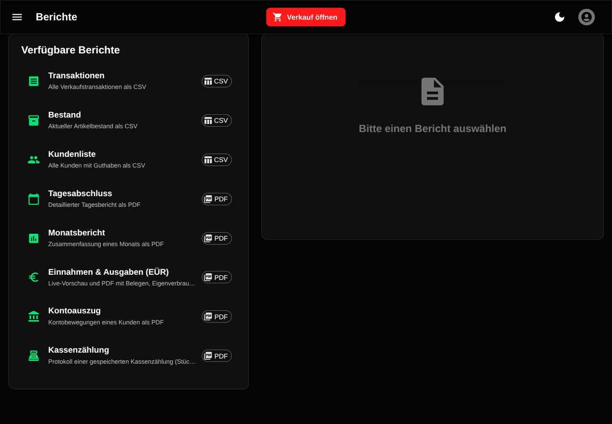
| Bericht | Format | Wofür |
|---|---|---|
| Tagesabschluss | Ein Geschäftstag (06:00 bis 06:00): Umsatz, Zahlungsarten, Artikel. | |
| Monatsbericht | Zusammenfassung eines Monats. | |
| Einnahmen & Ausgaben (EÜR) | Laufende Zahlen mit Belegen und Eigenverbrauch; darunter die Live-Vorschau. | |
| Kontoauszug | Alle Bewegungen eines Kunden. | |
| Kassenzählung | Protokoll einer gespeicherten Zählung. | |
| Transaktionen, Bestand, Kundenliste | CSV | Zum Weiterrechnen in der Tabellenkalkulation. |
Kassenprüfung
Menü → Finanzen → Kassenprüfung – das Geschäftsjahr abschließen und einfrieren.
Neues Jahr legt ein Geschäftsjahr an (Zeiträume dürfen sich nicht überschneiden). Der Abschluss führt in sechs Schritten durch alles, was die Kassenprüfer sehen wollen:
- Zeitraum – von wann bis wann.
- Kasse – eine Kassenzählung zum Stichtag. Ohne Zählung kein Abschluss.
- Bank – Kontostände eintragen, die App zeigt die Abstimmung.
- Belege – alle Einkaufsbelege des Jahres mit Nachweis; fehlende fallen sofort auf. Alles zusammen gibt es als ZIP.
- Inventur – gezählte Kisten und Flaschen. Plus heißt: mehr da als gebucht. Minus heißt: es fehlt etwas, z. B. getrunken ohne „Auf den Wirt“.
- Prüfen – Zusammenfassung ansehen und abschließen.
Das Jahresabschluss-PDF enthält unter anderem: Einnahmen und Ausgaben, alle Kassenzählungen des Jahres, Stornos und Korrekturen, die Guthaben aller Kunden zum Stichtag mit Abstimmung, den Geldbestand am Anfang und am Ende, die Bank-Abstimmung und die Inventur. Solange das Jahr offen ist, steht ENTWURF darauf.
Clubscore und Bildschirme
Menü → Clubscore – die Rangliste, live.
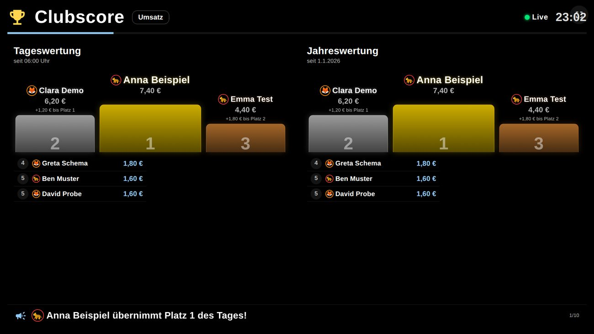
- Gezählt werden nur Artikel mit „Zählt für den Clubscore“ und nur Verkäufe, die nicht storniert sind.
- Ansichten: Umsatz, Anzahl, Teams oder Wechselnd.
- Ziele (höchstens sechs) setzen Marken, z. B. „200 Radler im Monat“ – auch für ein Team. Wird ein Ziel erreicht, feiert der Bildschirm den Käufer.
- Am Jahresanfang startet die Jahreswertung neu, das alte Jahr landet im Archiv.
Bildschirme ohne Anmeldung
| Adresse | Zeigt |
|---|---|
| /public/highscore | Clubscore für den Fernseher. Vollbild über den Knopf oben rechts. |
| /public/ads | Werbung und Aushänge in Dauerschleife. |
| /check-balance | Guthaben-Abfrage für Gäste (Name + PIN). |
Die Folien für /public/ads entstehen unter Menü → Werbung: Bild oder Video hochladen oder eine Folie selbst gestalten, Reihenfolge per Ziehen ändern, Anzeigedauer einstellen.
Benutzer und Passwörter
Menü → Verwaltung → Benutzer (nur Admin)
- Neuen Benutzer mit Name, E-Mail oder Benutzername, Rolle und Passwort anlegen.
- Passwörter brauchen mindestens 8 Zeichen mit Groß- und Kleinbuchstaben und einer Zahl.
- Wer nicht mehr mitmacht, wird deaktiviert. Seine Buchungen bleiben mit seinem Namen erhalten, anmelden kann er sich nicht mehr.
- Ein Admin kann jedem ein neues Passwort setzen. Das eigene ändert jeder selbst über das Symbol oben rechts.
Wenn etwas nicht klappt
- Der Bildschirm bleibt hängen oder zeigt „Da ist etwas schiefgelaufen“.
- „Neu laden“ antippen. Gebuchte Verkäufe sind gespeichert, offline erfasste bleiben in der Warteschlange.
- Oben steht „Neue Version verfügbar“.
- In einer ruhigen Minute bestätigen. Die Seite lädt neu, der Warenkorb ist danach leer.
- Der Zähler mit wartenden Buchungen geht nicht weg.
- WLAN prüfen. Auf den Zähler tippen: Dort steht, was wartet und was fehlgeschlagen ist. Angemeldet bleiben.
- Auf den falschen Kunden gebucht.
- Stornieren (direkt über „RÜCKGÄNGIG“ oder unter Transaktionen) und neu buchen.
- „Limit überschritten“.
- Das Konto steht bei −10 € oder würde darunter fallen. Aufladen oder bar kassieren.
- Die Kasse stimmt nicht.
- Unter Kasse & Bank die Herleitung des Solls ansehen („Alle Posten zeigen“). Häufige Ursachen: eine Aufladung als „Bar“ gebucht, die überwiesen wurde; Geld zur Bank gebracht, aber nicht gebucht; ein Storno, bei dem das Geld in der Kasse blieb.
- Eine Änderung wird mit einem Hinweis auf ein abgeschlossenes Geschäftsjahr abgelehnt.
- Das Jahr ist geprüft. Nur ändern, wenn es wirklich nötig ist – „Trotzdem ändern“ protokolliert den Eingriff für die Kassenprüfung.
- Ein Beleg lässt sich nicht hochladen.
- Erlaubt sind JPEG, PNG und PDF. iPhone-Fotos im Format HEIC vorher umwandeln oder als Bildschirmfoto speichern.
- Passwort vergessen.
- Ein Admin setzt unter Benutzer ein neues.
Bildschirmfotos zeigen eine Demo-Instanz mit erfundenen Namen. Stand: November 2026.